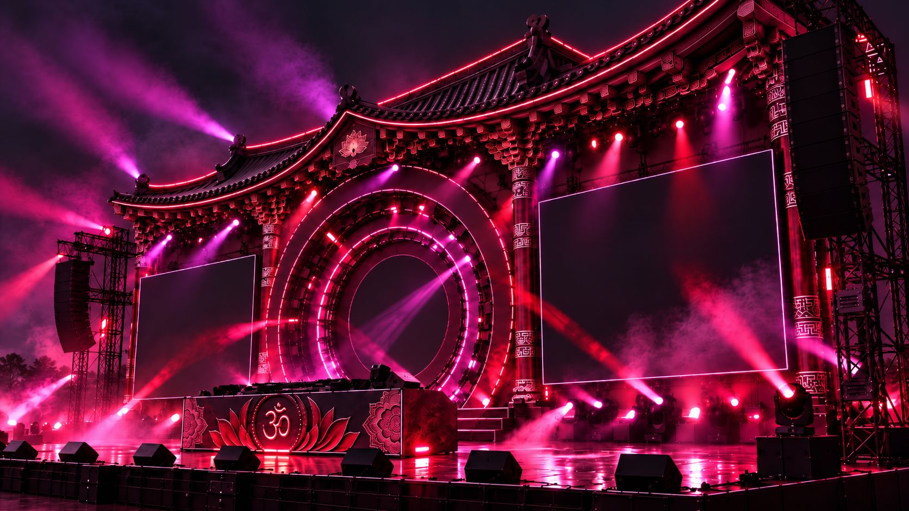
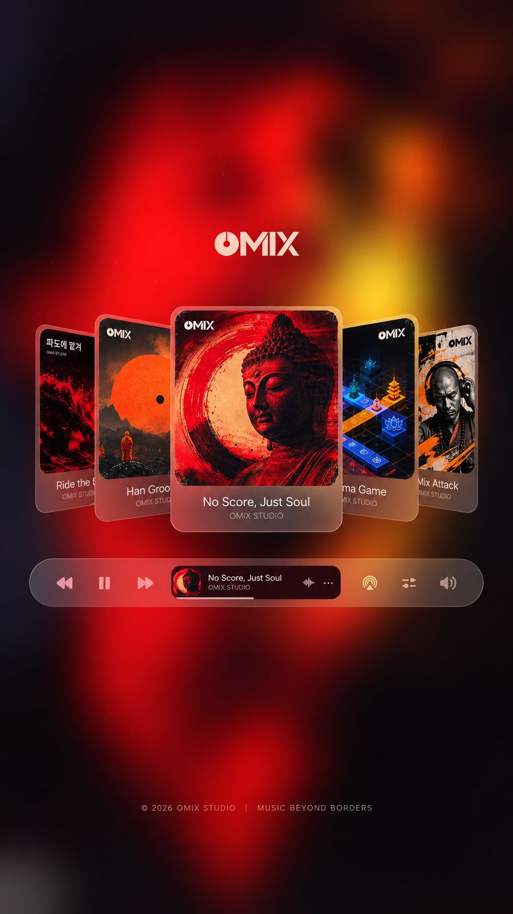

↗ Korean Buddhism × Modern Music
108 SOUNDS · Side A
Transforming ancient sound, ritual, and tradition from
BUDDHA TO CLUB.
불교를 더 감각적이고, 더 쉽게,
더 오래 경험하게 하는 음악 플랫폼.
OMIX는 한국 불교가 가진 소리, 상징, 의례적 분위기를 현대 음악 경험으로 재해석하는 플랫폼입니다. 사용자는 단순히 음악을 듣는 것에서 끝나지 않고, 직접 사운드를 조합하고, 자신만의 믹스를 만들고, 그 결과를 저장하고 공유하며 불교 문화를 새로운 방식으로 다시 경험하게 됩니다.
↗ OUR MISSION

MUSIC AS
CULTURAL ENTRY
“불교를 설명하는 것이 아니라,
먼저 듣고 경험하게 만드는 것.”
— OMIX, 2026
OMIX는 불교를 어렵고 멀게 느끼는 젊은 세대에게 음악이라는 익숙한 언어로 접근합니다.
불교의 의미를 강의처럼 전달하기보다, 사운드와 리듬, 인터랙션을 통해 자연스럽게 경험하게 만드는 것이 OMIX의 방식입니다.
우리는 불교가 과거의 종교적 이미지에 머무르지 않고, 오늘날의 감각과 취향 안에서 다시 반응할 수 있다고 봅니다.
OMIX는 음악 감상, 리믹스 제작, 굿즈, 아카이브를 하나의 흐름으로 연결해 일회성 체험이 지속 가능한 문화 경험으로 이어지도록 설계합니다.
Listen. Mix. Return.
Step 01
Listen
OMIX 차트와 장르 탐색으로 불교 사운드를 재해석한 이번 주 최고의 트랙을 발견하세요. 매주 월요일 50곡이 업데이트됩니다.
Step 02
Mix
OMIX Studio에서 16개의 사운드 패드를 조합해 나만의 리믹스를 만듭니다. 사용자는 정해진 음악을 소비하는 것에서 나아가 직접 사운드를 선택하고 배열하며, 불교 문화를 참여형 콘텐츠로 경험합니다.
Step 03
Return
완성된 믹스는 My Player에 저장되고, QR과 카드 형태로 공유됩니다. 한 번의 체험이 끝나는 것이 아니라 다시 듣고, 다시 만들고, 다시 공유되는 순환 구조를 통해 OMIX 경험은 지속됩니다.
OMIX in Numbers
Tracks
매주 업데이트
Artists
국내외 협업
Plays
누적 재생
Genres
불교 × 현대